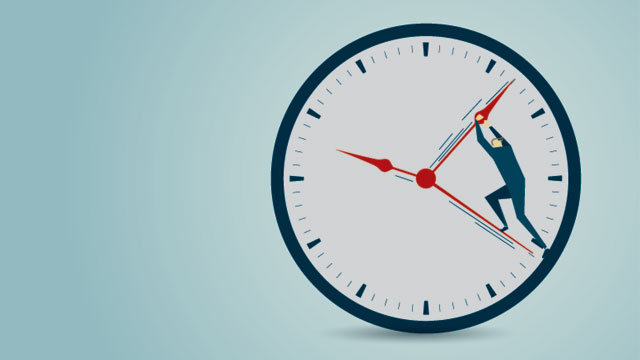

Для выявления причин нехватки времени необходимо периодически проводить инвентаризацию времени за несколько рабочих дней. Недостаток времени можно определить по следующим признакам:
• Отсутствует чёткое расписание работы на текущий день;
• Секретарь или помощник не знает распорядка дня своего руководителя, не знает, где он будет находиться в определённый момент рабочего дня;
• Из-за чрезмерной занятости менеджер несвоевременно отвечает на деловые письма;
• Из-за нехватки времени в течение рабочего дня менеджер вынужден завершать работу дома;
• Частые телефонные звонки и визиты посетителей не дают сосредоточиться на основной работе;
• Менеджер постоянно выполняет работу за своих подчинённых, поскольку ему кажется, что он сделает её лучше;
• Большой поток рутинных дел не дает менеджеру возможности заниматься основной работой.
Наиболее характерные причины дефицита времени.
• Бесплановость работы как результат работы не только самого менеджера, но и стиля работы всей организации;
• Несоответствие работника и занимаемой им должности;
• Неадекватная оценка своих способностей, скорости работы, результативности;
• Отсутствие личной миссии работника (что я могу сделать для организации, что могу получить, какими активами располагаю);
• Неумение контролировать свои потребности (в мыслях, питании, общении, выражении эмоций);
• Слабая мотивация труда, приводящая к низкой производительности (зарплата давно не увеличивалась, долгое время нет повышения в должности), порождающей хронический недостаток времени.